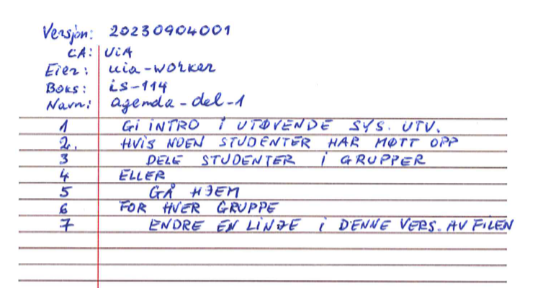
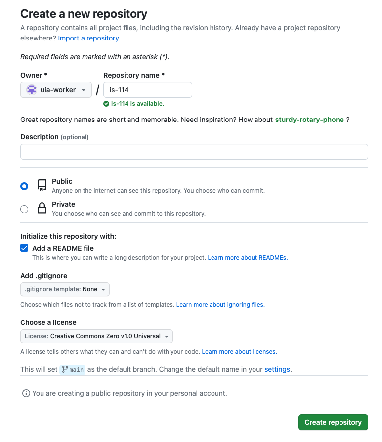
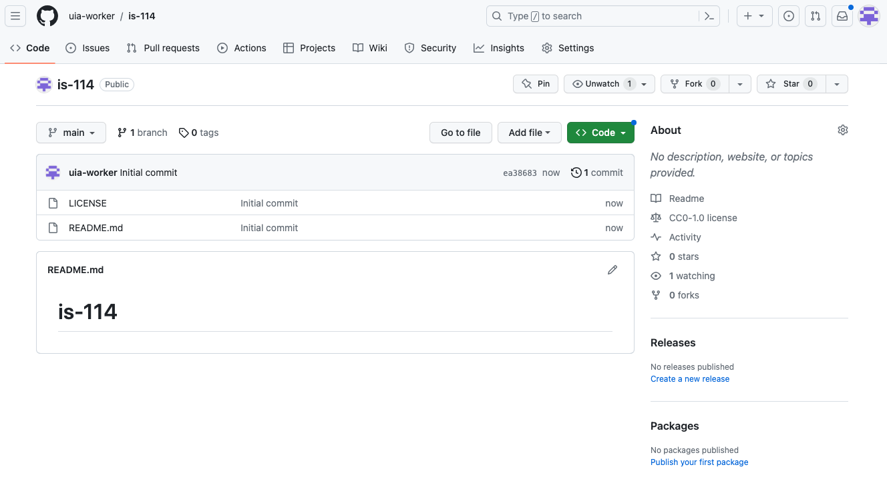
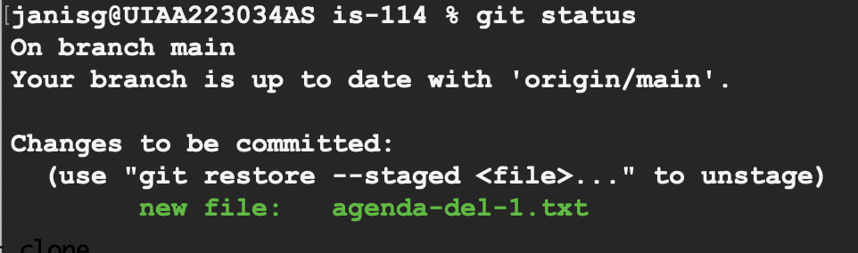
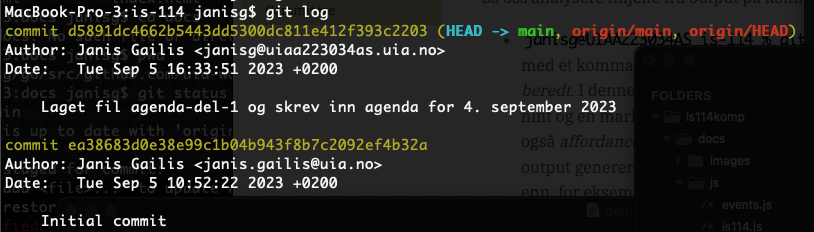
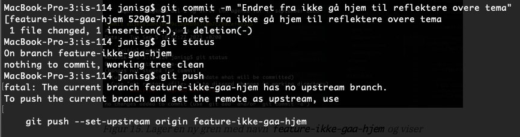
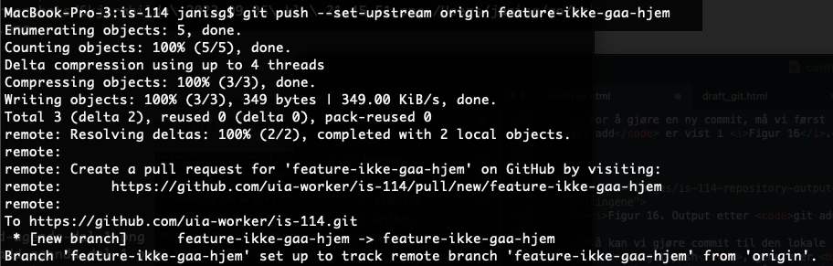
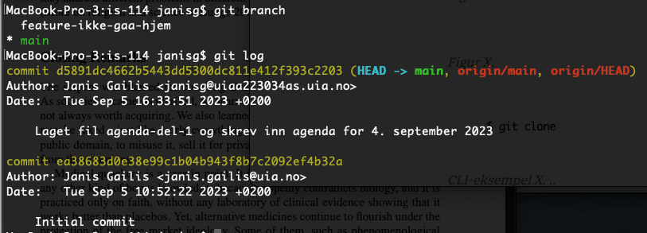
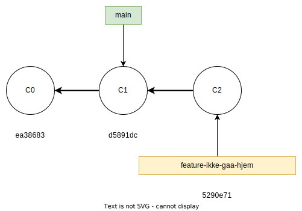
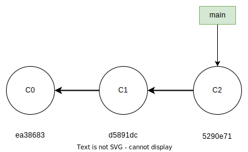

Commit tre
Begynner med et fysisk dokument
La oss bruke dokumentet i Figur 1, som et utgangspunkt for en repository på Github.
Figur 1. Et bilde av et skriftlig dokument med metadata og en agenda som innhold (brukt på samling 4. Sept. 2023).
Lage ny repository på Github
Jeg oppretter en repository (ved å bruke knappen "New"; se Figur 2) i brukerkontoen uia-worker med navn is-114. Som dere husker fra forelesning, så brukte vi UiA som metaforen for en sertifiserende autoritet. I den elektroniske "verden" skal vi anta at Github er en slik autoritet, som vi alle kan stole på, og gjennom hvis "rom" skal vi kommunisere. Vi bruker de samme navn (identifikatorer) på eier og boks (repository) i den elektroniske "verden", som vi brukte i den fysiske verden.
Figur 2. Skjermdump demonstrerer knappen "New", som kan brukes for å lage en ny repository (skjermdump laget 5. Sept. 2023).
Jeg vil bruke begrepet "verden" her i en betydning, som kanskje for noen av dere er kjent fra dataspill. For å kunne klare å spille dataspill, må man leve seg inn i en fiksjon. Egentlig gjelder det mange aktiviteter, som den moderne (nåtidens, anno 2023) homo sapiens må engasjere seg i, - uten fantasi er det utfordrende å navigere abstrakte rom. Alle "rom" på WWW er abstrakte. For å drive med systemutvkling, må man kunne praktisere fiksjon. Vi har det fysiske rommet (V-FYS) med alle reelle ting (som konserverer energi), så kan vi dele fiksjons rommet i mange "verdener" etter behov. I dette dokumentet trenger vi å være i en "verden" med grafisk brukergrensesnitt (V-GUI), hvor vi må praktisere et tankemønster, og så må vi skifte til en "verden" med kommandolinje (V-CLI), som krever en annen tankemønster (eller modus). En analogi, - tidligere editorer hadde minst to moduser, - tekst- eller skrive modus og kommandomodus. Når man er i den ene modusen, kan man ikke samtidig handle i den andre.
Det er flere valg i "verden" V-GUI, som ikke fantes i den fysiske verden V-FYS (se Figur 3). Det er to type repository-er på Github, - Public (alle med på Internett kan se innholdet i repository-en, men eieren kan bestemme hvem kan skrive til repository-en) og Private (eieren kan bestemme hvem som kan se innholdet og skrive til repository-en). I dette tilfelle velger jeg Public fordi at jeg ønsker at et stort antall utviklere kan se innholdet i denne repository-en. Noen applikasjoner tilbyr også valget "Unlisted", som gjør at alle som kjenner til lenken kan se repository, men den er ikke listet ut i brukerens profil.
Figur 3. Skjermdump demonstrerer valg man kan gjøre, før man lager en ny repository (skjermdump laget 5. Sept. 2023).
Jeg ønsker også at programmet på Github skal lage en fil med navn README.md når repository-en blir opprettet. Det er en "de facto"-standard (uformell lov) at hver repository skal ha en fil som beskriver prosjektet i sin helhet. Jeg kunne skrive noe som
Denne repositorien inneholder oppgaver for emne IS-114 ved Universitetet i Agder. Repositorien kan brukes for å lære å bruke Git og Github.
Foreløpig lar vi valget "Add .gitignore" ligge (la stå "None"). Dette valget kommer vi tilbake til senere.
Jeg velger derimot en lisens for mitt arbeid, - "Creative commons Zero v1.0 Universal license". Denne lisensen ønsker jeg å bruke fordi at den er designet for å maksimalt fremme deling, gjenbruk og adopsjon av kreativt arbeid (åndsverk) uten begrensninger og tillate andre til å bruke arbeidet for ethvert formål, inkludert kommersiell bruk, uten å søke tillatelse eller gi attribusjon til den opprinnelige skaperen. Det finnes flere type lisenser, som brukes for å fremme åpen tilgang til kunnskap og dere vil bli kjent med dem i løpet av studiet.
Da er alt klart for å skape en ny repository!
"Søtsaker" i Github grensesnittet
Figur 4. Viser en nylig skapt repository på Github med navn "IS-114 (skjermdump laget 5. Sept. 2023).
Som vi kan se i Figur 4, har Github applikasjonen skapt et grensesnitt, som har mange funksjoner. Dere kan se "Issues" (vi nevnte de på samlingen) i den horisontale menyen nesten på toppen av siden. Dere kan også se "Fork" knappen neste øverst til høyre, som gir mulighet å kopiere repository-en til sin egen konto og eventuelt videreutvikle den videre uten direkte tilknytting til den opprinnelige (videre kalt originale og i git-terminologien kalt origin) repository-en. Under "Settings" finnes det flere valg, blant annet for å gi samarbeidspartnere rettigheten til å skrive til (gjøre git push) den originale repository-en. For å lage en "Personal Access Token", må dere bruke "Settings" for deres konto og ikke "Settings" for repository-en. Dere kan gjerne selv utforske flere funksjoner på siden.
Kloning
Før vi forlater webgrensesnittet fra Github, skal vi kopiere lenken, som skal gi oss mulighet til å klone repository-en til vår lokale datamaskin, ved å skrive kommandoen git clone på kommandolinje (Terminal, GitBash, cmd eller PowerShell). Se Figur 5, som illustrerer dette. For å kunne skrive tilbake til repository, er det nødvendig å konfigurere autentisering, siden default er det kun eieren av repository-en som kan skrive til den på Github. Hvis du har laget en "Personal Access Token" og installert Git på din datamaskin korrekt, så kan du velge metoden "HTTPS". Vi forklarer disse metodene senere.
Figur 5. Viser valg for kloning i webgrensesnittet på Github (skjermdump laget 5. Sept. 2023)
Bilde ovenfor har en dårlig oppløsning, men lenken til repositorien er https://github.com/uia-worker/is-114.git. Vi kan si litt om hvordan dette navnet (som er en global identifikator på WWW) er konstruert. Først er det navnet på protokoll, som brukes for å kommunisere mellom to noder (les datamaskiner) på Internett, - https://, som står for HyperText Transfer Protocol Secure (IS-105 stoff). Så kommer det "sertifiserings autoritet" eller domennavn/"servernavn", som i vårt tilfelle er github.com. Det finnes flere webapplikasjoner, som tilbyr lignende tjenester som Github, - Bitbucket, Gitlab, sourcehat.
Nå er det på tiden å skifte "verden" fra V-GUI til V-CLI og utføre git clone kommandoen med lenken til repository som argument (argumentet som kommandoen "virker" på, kalles også operand; vi vil møte dette konseptet igjen, når vi skal snakke om funksjoner i programmeringsspråk). Jeg skal også bruke symbolet $ for å indikere prompten til kommandolinjen (et annet symbol som ofte brukes er %) For kommentarer brukes det symbolet # (se CLI Eksempel 1). Kommentarer blir ignorert av fortolkeren. CLI står for Command Language Interpreter (CONTENTS, 2018).
$ pwd # kommando "print working directory"
~/github.com/uia-worker/ # ~ betegner her hjemmemappe
$ git clone https://github.com/uia-worker/is-114.git
CLI Eksempel 1. Utlisting av gjeldende mappe og kloning av repositorien fra kommandolinjen på en lokal datamaskin.
Legg merke til at linjer 1 og 3 i CLI Eksempel 1 kan tolkes også som input, og linje 2 som output (for input pwd).
Endringshistorikken (loggen)
Nå som vi har kopiert repository-en fra Github, kan se på hvilken historikk har den. Det gjøres med kommandoen git log. Figur 6 viser denne historikken rett etter kloning. Husk at du må endre mappen fra den mappen du gjorde kloning i, til mappen hvor alle filene og mappene til repositorien ligger i (kommandoen er cd is-114.

Figur 6. Output fra git log i kommandovindu (skjermdump laget 5. Sept. 2023).
La oss analysere linjene vist i Figur X.
janisg@UIAA223034AS is-114 % git loger en såkalt prompt sammen med en kommando. Fra latin promptus, som betyr beredt. I denne konteksten kan man tolke det at brukeren får en tekstuell hint og en markør, som inviterer til handling (noen ganger kaller man det også affordance, som kan oversettes til norsk som råd). I dette eksemplet er output generert på en MacBook Pro datamaskin og derfor er annerledes enn, for eksempel, i GitBash.janisg@UIAA223034ASindikerer brukernavn for bruker som bruker terminalen sammen med en kodeord, som indikerer navn til datamaskinen (blir valgt når datamaskinen blir konfigurert for første gang). Symbolet%brukes har som et prompt-tegn (nevnt også tidligere), dvs. den skal signalisere at etter det kan bruker skrive inn sine kommandoer. Før man har skrevet inn noe, skal det også vises en markør (kan være en stedsholder eller noe som fremstår som blinkende). I zsh (Wikipedia Contributors, 2023a) og i macOS (Wikipedia Contributors, 2023b) kan man modifisere promten ved å skrive inn spesifikke kommandoer i en spesifikk konfigurasjonsfil med navn~/.zshrc, hvor~representerer brukerens hjemmemappen (Williams, 2022).
git loger kommandoen, som jeg skrev på kommandolinje og vi kan kalle det for input. Mer informasjon omgit logkan man finne ved å skrive inn kommandoengit log --help(denne kommandoen har også et alternativ--help(på engelsk option), som da indikere at vi ønsker hjelp med syntaksen og definisjoner for kommandoen.commit ea38683d0e38e99c1b04b943f8b7c2092ef4b32a (HEAD -> main, origin/main, origin/HEAD)er linje fra Git og er den første linje i output. Den viser en id for commit, som er en SHA-1 hash. Kort forklart er det en ID, som består av tall og bokstaver (en streng), og er generert på en møte (med en algoritme), som gjør at sjansen for å generere to like slike strenger innen en repository er tilnærmet null. I vår "commit-tre" skal vi kun notere de første 7 symboler fra denne strengen. I parentes så er det ekstra informasjon om tilstanden til Git-databasen. Git bruker et begrepHEAD, som man kan forestille seg som en slags markør som markerer den gjeldende grenen (på engelsk current branch), som i dette tilfelle ermain. Det indikeres også at den lokale og den originale grenen er synkronisertorigin/main, og at den lokale og den originale HEADorigin/HAED, peker på toppen av sine respektive grener.- Denne linjen bør være selvforklarende. Husk at navnet og e-postadressen er den som ble definert med kommandoer
$ git config --global user.name "(ditt navn)" $ git confit --global user.email "(din e-postadresse)"CLI Eksempel 2. Definere konfigurajonsparametre for Git installasjonen.
- Dato eller tidsstempel (fra den engelske timestamp). Definisjon av formatet er en innstiling i Git men kan være avhengig av innstillingen for operativsystemet på din datamaskin. Vi går ikke inn på det her.
- Etter en tom linje kommer det en kommentar for hva commit-en dreier seg om. Husk at en commit kan relateres til endringer i flere enn en fil, så beskrivelsen burde gjenspeile alle endringene så kortfattet som mulig.
Commit tre versjon 1
Nå kan vi begynne å tegne "commit-tre" (se Figur 7). Git har oppdaget en initiell commit i databasen , som er lagret i mappen .git og som vi fikk fra den originale repository-en når vi gjorde kloning.
Figur 7. Viser "commit-tre" etter den initielle commit-en med gjeldende grennavn og commit id.
Før vi går videre, kan vi introdusere en nyttig kommandogit status, som vi skal bruke mye.
Figur 8. Viser output fra kommandoen git status (viser hvilken gren er den gjeldende og at arbeidstre er "ren")
Som vi ser i Figur 8, så er det ingen endringer, som er blitt gjort i den lokale repository-en.
Lage en ny fil agenda-del-1.txt
Til nå har jeg ikke gjort noen endringer i noen av filene i repository-en, så nå skal jeg legge til en elektronisk versjon av den filen, som vi brukte som fysisk eksempel i klasserommet, - agenda-del-1.txt. Dere ser sikkert at man må skifte "verden" fra V-CLI til V-GUI, hvis man skal bruke en editor med grafisk brukergrensesnitt. Det må nevnes her at det finnes også editorer (pico, vim, emacs), som man kan bruke i V-CLI "verden" (kort sagt, - fra kommandolinjen). Det er en god ide å lære å bruke en slik editor for å unngå å skifte "verdener", som kan være en kognitivt belastende øvelse.
Jeg gir filen etternavn .txt (tekst), siden agenda ble ikke skrevet på et spesifikt programmeringsspråk, men på et naturlig språk. Jeg åpner min Sublime Text editor applikasjonen, finner menyelement for å åpne en mappe, finner mappen hvor jeg klonet repository-en is-114 i mitt filsystem, lager en ny fil under mappen is-114 og lagrer filen med navn agenda-del-1.txt. Se Figur 9 for detaljer.
Figur 9. Viser Sublime Text vinduet med mappestruktur til repositorien is-114 og innholdet i filen agenda-del-1.txt.
Hva viser git status nå?

Figur 10. Viser output fra git status etter at filen agenda-del-1.txt ble skapt.
Legge endringene "på scenen"
Verdensendring fra V-GUI til V-CLI!
For å lagre endringer i vår lokale repository, må vi legge endringene "på scenen" og etterpå gjøre en commit. Først må vi bruke kommandoen git add:
$ git add agenda-del-1.txt
CLI Eksempel 3. Viser kommandoen for å legge endringene "på scenen".
Figur 11. Viser output fra git status etter kommandoen git add
Det er forsett kun en endring registrert i loggen, og tilstanden er fortsatt som vist i Figur 7.
Commit
Nå kan vi gjøre commit til den lokale repository-en.
$ git commit -m "Laget fil agenda-del-1 og skrev inn agenda for 4. september 2023"
CLI Eksempel 4. Viser kommandoen for å gjøre en commit.
Vi forventer nå at endringene vi har gjort på vårt filsystem (i mappen hvor vi har lagret den klonede repository-en) er blitt lagret i endringsloggen som ligger i mappen .git (se Figur 12). Husk at vi kan sjekke endringsloggen/historikke til vår lokale repository med kommando git log.
Figur 12. Innholdet i endringsloggen etter git commit
Et par ting vi kan legge merke til her. For det første, er HEAD nå flyttet til den siste commit som vi gjorde og origin/main ligger nå en commit bak. Eller mer presist formulert, den ligger en commit bak den versjonen som vi klonet. Hvis noen andre kan skrive til repository-en på Github, så kan vi ikke med sikkerhet vite om statusen på origin/main er den samme, som den var når vi gjorde kloning. Legg også merke til at min e-postadresse er ukorrekt (den eksisterer ikke). Git har forsøkt å lage en e-post adresse ved å kombinere e-postadressen som er registrert hos Github, mitt lokale brukernavn og det elektroniske navnet på min datamaskin (janisg@uiaa223024as.uia.no). Det er ikke heldig, hvis applikasjonen utvikles i et felleskap, og hvis andre utviklere ønsker å ta kontakt ved å sende e-post. Jeg kan løse dette ved å utføre kommandoene fra CLI Eksempel 2.
Commit tre versjon 2
Nå kan vi bygge videre på "commit-treet", siden vi har gjort en ny commit. Foreløpig har commit kun vært registrert lokalt, så vi må utføre en git push for å overføre endringene til produksjonsversjonen på Github.
Figur 13. Commit-tre med to commits i repository is-114.
Klone på en ny datamaskin
For å simulere et samarbeid, kloner vi repository med tilstand vist i Figur 13 på en annen datamaskin. Den første hadde navnet UIAA223024AS, og den andre har navnet MacBook-Pro-3, som det fremgår fra prompt-strengen i kommandovinduet.
Figur 14. Output fra git log etter at repository har blitt klonet på MacBook-Pro-3 til en mappe ~/github.com/uia-worker/is-114.
Nå ønsker brukeren på MacBook-Pro-3 gjøre endringer på linje 5 i filen agenda-del-1.txt, dvs. endre linjen fra "GÅ HJEM" til "REFLEKTERE OVER UTØVENDE SYS. UTV.". Brukeren kan gjøre endringen direkte i grenen main, men det er ikke en god praksis å gjøre bidrag direkte til main (blant annet fordi at den grenen er vanligvis forbeholdt produksjonsversjonen og alle nye bidrag bør testes før man eventuelt endrer produksjonsversjonen. Derfor er en anbefalt praksis å bruke en feature- gren. CLI Eksempel 5 demonstrerer hvordan man kan både lage en ny gren og bytte til den (med det menes at alle endringene man skal gjøre fra nå av, vil ikke på virke grenen main, men blir registrert på grenen feature-ikke-gaa-hjem.
$ git checkout -b feature-ikke-gaa-hjem
CLI Eksempel 5. Viser kommandoen for å skape en ny gren og bytte til den.
Figur 15 viser output fra gjennomføringen av kommandoen fra CLI Eksempel 5. Man kan alltid finne ut hvilken gren man arbeider på med kommandoen git branch. I dette eksemplet er det brukt en editor, som man kan åpne direkte i kommandolinjen (vim agenda-del-1.txt). Vi kan lære å bruke vim på et senere tidspunkt. Dere kan bruke den editoren som dere er komfortable med (men IDE, som Visual Studio Code, er ikke anbefalt i denne fasen). Legg merke til at HEAD peker nå på den nye grenen feature-ikke-gaa-hjem. Det betyr at det er på det stedet i treet vi har gjort våre endringene. Det er foreløpig ikke gjort en ny commit.
Figur 15. Lager en ny gren med navn feature-ikke-gaa-hjem og viser tilstanden til den lokale repository-en med kommandoen git log.
For å gjøre en ny commit, må vi først legge endringene under Gits overvåking ("på scenen"). Output fra git add er vist i Figur 16.
Figur 16. Output etter git add og før git commit.
Nå kan vi gjøre commit til den lokale repository-en, og sende endringene videre til origin.
Figur 17. Output som viser git commit med påfølgende git push og forslag om en utvidet kommando for å få etablert grenen feature-ikke-gaa-hjem< på origin.
Når vi prøver å bruke git push (se Figur 17), genererer Git output som indikerer at det finnes ingen gren feature-ikke-gaa-hjem på origin, så vi må spesifisere det med en argument --set-upstream og spesifisere hvilken gren vi ønsker å opprette på origin.
$ git push --set-upstream origin feature-ikke-gaa-hjem
CLI Eksempel 6. Kommandoen lager en ny gren på origin og sender endringene deretter.
CLI Eksempel 6 viser hele kommandoen og Figur 18 viser output på MacBook-Pro-3. Et par ting, som man bør reflektere over. - output foreslår å lage en pull request (som dere husker var det en måte å publisere endringene på origin, slik at de kan sees av alle potensielle utviklere i prosjektet og at disse utviklere kan bidra til en prosess av innlemmelse av den nye koden i produksjonsversjonen). Git foreslår også en lenke (en URL, som står for Uniform Resource Locatorhttps://github.com/uia-worker/is-114/pull/new/feature-ikke-gaa-hjem, og er en standardmåte å navngi ressurser på WWW). En annen ting er at Git gir beskjed om at den lokale grenen er nå satt opp til å overvåke den tilsvarende grenen på origin.

Figur 18. Output etter at en den lokale grenen feature-ikke-gaa-hjem er sendt over til origin. Illustrerer også pull request.
Vi kan også endre "verden" og se hvordan det ser ut på websiden til vår repository hos Github (se Figur 19). Oppløsningen er dårlig, men det som står på den grønne knappen er Compare & pull request. Når man trykker på knappen, fører den til den samme URL-en som Git foreslo i outputen på kommandolinjen.

Figur 19. Github webside (i "verden" V-GUI), som viser at det har blitt laget en ny gren feature-ikke-gaa-hjem.
Commit tre versjon 3
Hvordan ser "commit-tre" ut nå? Nå har vi to grener i vår repository (både lokalt og på origin), - main og feature-ikke-gaa-hjem. I Figur 20 ser vi endringsloggen for grenen feature-ikke-gaa-hjem, og i Figur 21 endringsloggen for grenen main. Det er to commit-er i den første og tre i den andre.
Figur 20. Endringsloggen til grenen feature-ikke-gaa-hjem
Vi kan bytte mellom grenene med kommando git checkout.
$ git checkout main
CLI Eksempel 7. Kommando for å bytte mellom grenene.
Figur 21. Endringsloggen til grenen main
Tilstanden til vår repository som den er nå er illustrert i Figur 22.
Figur 22. Commit tre versjon tre med to grener og tre commit-er.
Merging
Endelig kan vi legge inn endringene i grenen main. Her vil det bli demonstrert en git merge fra kommandolinjen. Det forutsetter at brukeren har rettigheter til å skrive til origin på Github. Som vi har nevnt tidligere, den anbefalte måten å gjøre dette er gjennom pull request, men formålet med denne guiden var å illustrere tegning av "commit-treet". Sammenslåing blir også enkel her, siden jeg brukte samme Github-kontoen på begge maskinene. Git gjør sammenslåing (engelsk merging) automatisk i dette tilfelle.
$ git merge feature-ikke-gaa-hjem
CLI Eksempel 8. Kommando for å innlemme endringene fra grenen feature-ikke-gaa-hjem i grenen main (må være på grenen main).
Figur 23. Output fra innlemming av endringene fra grenen feature-ikke-gaa-hjem i grenen main; brukes Fast-forward metode for sammenslåing, siden det er den samme brukeren som har endret en linje i en av filene i repository
Commit tre versjon 4 og 5
Commit treet etter etter git push er vist i Figur 24.
Figur 24. Versjon 4 av "commit-treet" etter sammenslåing og med to grener.
$ git merge feature-ikke-gaa-hjem
CLI Eksempel 8. Kommando for å innlemme endringene fra grenen feature-ikke-gaa-hjem i grenen main (må være på grenen main).
$ git push origin -d feature-ikke-gaa-hjem
CLI-eksempel 9. Slette feature- grenen fra origin (det er vanlig å ikke etterlate slike grener i repository, siden endringene er blitt innlemmet i grenen main.
Siste versjon av "commit-treet" er vist i Figur 25.
Figur 25. Versjon 5 av "commit-treet" med kun en gren.
SLUTT.
Referanser
- CONTENTS. (2018). Opengroup.org. https://pubs.opengroup.org/onlinepubs/9699919799/basedefs/contents.html (CONTENTS, 2018)
- Wikipedia Contributors. (2023a, July 20). Z shell. Wikipedia; Wikimedia Foundation. https://en.wikipedia.org/wiki/Z_shell (Wikipedia Contributors, 2023a)
- Wikipedia Contributors. (2023b, September 2). macOS. Wikipedia; Wikimedia Foundation. https://en.wikipedia.org/wiki/MacOS (Wikipedia Contributors, 2023b)
- Williams, C. (2022, May 31). Customizing my Zsh Prompt. DEV Community; DEV Community. https://dev.to/cassidoo/customizing-my-zsh-prompt-3417 (Williams, 2022)